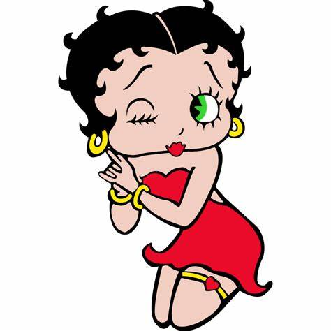

Early Cartoon Characters and Their Creators

Mickey Mouse
Created by Walt Disney and Ub Iwerks (1928).

Betty Boop
Created by Max Fleischer (1930).

Popeye the Sailor
Created by E.C. Segar (1929).

Bugs Bunny
Created by Tex Avery and Bob Clampett (1940).

Felix the Cat
Created by Otto Messmer and Pat Sullivan (1919).